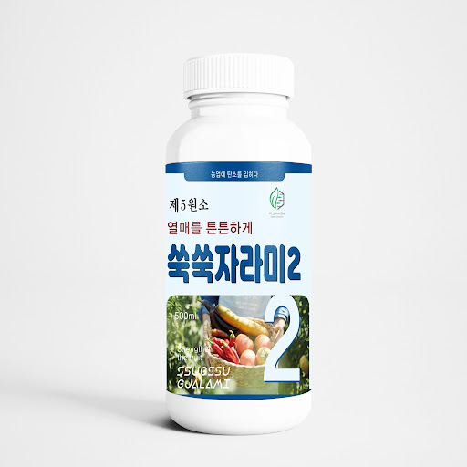

현재 AI 진단 엔진 가동 중 · 대기시간 3초
local_hospital
eco
식물병원
AI Plant Doctor — 사진 한 장으로 내 식물의 상태를 진단해드려요
98.4%
누적 진단 정확도
142,800+
해결된 식물 데이터
전북대
농생명 랩 공동연구
document_scanner
무료 진단
스마트 진단 업로드
photo_camera
spa
식물 사진을 올려주세요
여기를 탭하여 갤러리에서 선택하거나 드래그하세요
테스트 샘플:
lightbulb
잎, 줄기, 뿌리 등 이상 증상이 나타난 부위를 밝은 곳에서 선명하게 찍어주시면 진단 정확도가 높아집니다 (정확도 98.4%).
증상 빠른 선택 (선택 사항)
verified
AI 분석 완료 (신뢰도 96.8%)
분석ID #HZ-2940
고추/원예 복합형
2025.02.25 방제 권고
진단 결과: 칼슘 결핍(Ca Deficiency) 및 과습 초기 증상
위험도 진단 등급
주의 단계 (조기 처방 필요)
!
경미
● 보통 (주의)
심각 (고사위험)
biotech
생화학 메커니즘 분석
토양 내 칼슘 이온 이동이 지체되어 어린 잎의 끝단이 타들어가고 마르는 팁번(Tip-burn) 현상입니다. 최근 고온 및 불규칙한 관수로 인해 증산작용 균형이 무너졌을 가능성이 높습니다.
medical_services 하이존바이오 처방 3단계 로드맵
1
수분 공급 템포 조절
통풍을 강화하고 겉흙이 보송하게 마를 때까지 관수 주기를 2일 연장하세요.
2
제5원소 이온칼슘 복합제 엽면시비
뿌리 흡수가 정체되었으므로 잎 뒷면에 직접 미세 분무하여 흡수율을 3.2배 향상시킵니다.
3
근권 미생물 활성화
뿌리 활력 강화를 위한 프로미노 생리활성제를 관주하여 2차 감염을 예방합니다.
RX PRESCRIPTION
함께 처방 시 효과 극대화
병원 처방 맞춤 솔루션

특허 기술 처방
science
칼슘 결핍 즉각 해결
제5원소 쑥쑥자라미2 (500ml)
칼슘 및 필수 미량요소 이온화 공급 · 세포벽 강화
₩22,000
처방 할인 10% 적용
 냉해·병해 종합보호
냉해·병해 종합보호
shield
특허 제10-2493517호
바이오레드졸 (500ml)
천연오일 보호막 코팅 · 균류 번식 억제 및 저항력 극대화
₩28,000
식물병원 연계 배송
support_agent
전문 연구원 1:1 정밀 진단
AI 진단 결과가 의심되거나 대규모 재배지인가요?
school
카카오톡 무료 1:1 전문가 상담
전북대학교 농생명 벤처 연구진이 토양 환경과 작물 사진을 직접 정밀 감정해 드립니다.
verified_user
하이존바이오 바이오테크 연구소 100% 품질 보증 및 방제 가이드 준수
smart_toy
AI 식물 닥터에게 추가 증상 질문하기...